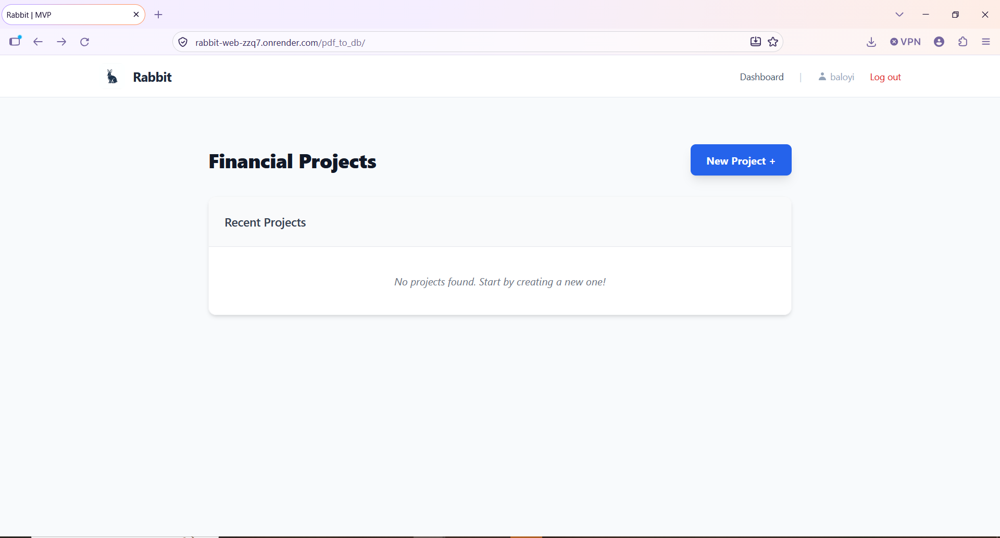
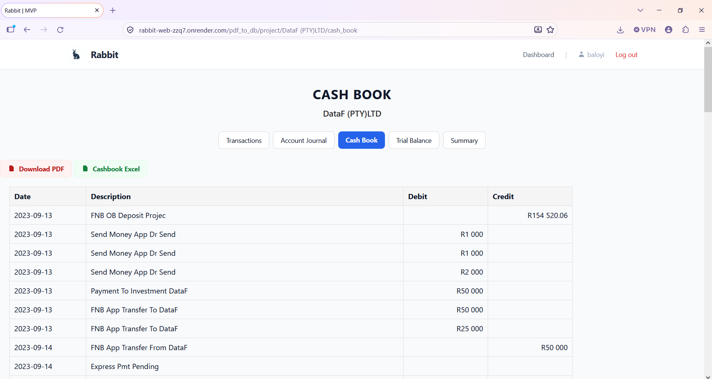

Rabbit: getting four banks' statements into numbers you can audit
A report is only as good as the data under it. The hard part of Rabbit was not the cashbook. It was turning four banks' statements, each printed differently, into clean rows that reconcile to the bank's own balance.
- My role
- Analysed the workflow and requirements, designed and built the system
- Context
- A small accounting practice serving SMEs, whose clients mostly bank with FNB
- Built with
- Python, Django, PostgreSQL, Celery and Redis, pdfplumber, pytesseract (OCR)
- Runs on
- Render (application) and Neon (PostgreSQL), both on free tiers
- Banks
- FNB, plus selected statement formats from Nedbank, Capitec and Standard Bank
- Output
- One structured transaction table, Excel data and a PDF cashbook
- Status
- Under development
1. The problem and the system
The practice receives client financial information as PDF bank statements, receipts and other records, and works in CaseWare, Excel and Microsoft Word. Bank transactions arriving as PDFs had to be copied into CaseWare by hand, and each transaction then given a sundry (an accounting classification), before any accounting work could begin. The process was repetitive and invited transcription errors. It also used time and attention that belonged to analysis and client work.
I analysed the existing workflow and the stakeholder requirements, then designed Rabbit as a structured bridge between client-provided bank statements and the accounting work that follows. The accountant picks the bank, uploads a statement, and it passes through the same path every time:
- Extract the transaction records, using OCR where the statement is an image
- Normalise them into one structured format
- Validate them against the statement
- Categorise each transaction through sundries
- Calculate the cashbook
- Export Excel data and a PDF cashbook

What the database holds
Uploaded statements are processed in memory and are not kept. Only the file name is stored, so that a repeat upload of the same file can be recognised.
| Table | Holds |
|---|---|
| Users | Accounts that own projects |
| Projects | The work for one client, containing its statements |
| Statements | One record per uploaded statement, with its file name (not the file) |
| Transactions | The extracted, normalised rows of each statement |
| Categories | The sundries that transactions are grouped under |
| Cashbooks | The cashbooks calculated from categorised transactions |
| Audit logs | A record kept alongside the other tables |
2. Three decisions that shaped the extraction
| What broke | What I changed |
|---|---|
| Text patterns stopped scaling. I began with regular expressions and string handling. Every new statement format and exception added more patterns, and the logic became too hard to maintain. | I moved to reading each word by its position on the page. The task became working out which pieces of text belong together on the page, which reconstructs a transaction from the layout and not from the wording. |
| One parser could not serve four banks. The banks differ in columns, date style, amount format and where descriptions sit. | I gave each bank its own extraction engine. The accountant selects the bank before uploading, and whichever engine runs, the output is the same table (below). |
| Some FNB statements became scanned-style documents. pdfplumber found no text to read. | I converted each page to an image, read it with OCR, and extracted the fields with logic. I tried Google's OCR API first to prove the approach could work, then moved to pytesseract, which is what Rabbit uses now. |
One table out, whatever the bank
| Field | Purpose |
|---|---|
| Date | Transaction date |
| Description | Bank transaction description |
| Amount | Transaction value |
| Sundry | Accounting classification |
| Balance | Running account balance |
FNB comes first because it is where the practice's clients bank, so FNB is the best-covered format. The other three banks work only for selected statement versions.
Where the data fought back
| Problem | Bank | What I did | Why |
|---|---|---|---|
| A stamp printed across the transaction list confused text extraction | Capitec | Extracted only text matching the angle and size of statement text | The stamp differs from real transactions, so it can be filtered without touching real rows |
| Amounts in inconsistent formats, such as 1.200.00, 1,200.00 and 1,200,200 | Nedbank | Normalised every amount to one numeric format before storing | Mixed separators corrupt totals and the running balance |
| A description printed on a second line | Standard Bank | Treated the line with the date and amount as the row, then joined the following line as its description | The date and amount mark where a transaction starts |
| A value sitting slightly above the rest of its row | Several | Grouped text into rows by vertical position, so the value still lands in its row | Statements are not perfectly aligned |
3. Business rules and validation
Reading money correctly
Extracting text does not tell you what it means. FNB puts every amount in a single column and shows money out as a negative number, so the sign decides the direction. Nedbank splits the figures into separate fee, debit and balance columns. On Nedbank and newer Capitec statements the fees are not added to the transaction amount, and the statement alone does not say how a fee should be treated for accounting. I asked the stakeholder for the rules and applied them.
Giving FNB dates a year
FNB's date column has no year, so 15/02 on its own is not a complete date. I combined three sources:
- The user: start-year and end-year fields set the financial period.
- The document: the statement year is read once from fixed coordinates on the first page, outside the transaction loop, so it is not re-read for every row.
- A business rule: the financial year runs from March to February. January and February take the end year, and March to December take the start year.
| Date on the statement | Financial year March 2025 to February 2026 |
|---|---|
| 15/03 | 15 March 2025 |
| 20/12 | 20 December 2025 |
| 10/01 | 10 January 2026 |
| 28/02 | 28 February 2026 |
A deliberate trade-off: the opening balance
Finding the opening balance reliably meant new extraction logic for every bank's layout. Instead, the user enters it. That kept the system simple and still gave the running balance the starting point it needs.
How I checked the numbers
I added a running balance to the stored transactions, as an audit column. I compared it with the balance column printed on the bank statement, and when something was wrong I could see how far the balance moved and which row caused it. That check is how I found most of the problems above.
On the statements I tested, every transaction was captured, the fields held what the accounting work needs, and the closing balance matched the bank statement.
A matching closing balance on its own can hide mistakes that cancel each other out, so the check also asks whether every transaction on the statement is present.
The Standard Bank case, step by step
Descriptions that wrapped onto a second line became rows of their own, with no date and no amount. Those rows came through as NaN and broke the running balance. Removing them fixed the balance, but it created a new problem: the wrapped text held the information that decides the transaction type. So I stopped treating the extra line as a row and attached it to the transaction above it. A row that passes validation is not always a complete transaction, and the fix is to rebuild it correctly, not to hide the error.
4. Deployment and trade-offs
Rabbit runs on free tiers: Render for the application and Neon for PostgreSQL. The first deployment ran into memory limits, which forced changes I would not have made on my own machine:
- Lighter code: I moved imports inside the functions that need them, so heavy libraries load only when used, and split the processing into service modules.
- Background processing: statements are extracted by a Celery worker with Redis, so a long extraction does not tie up a web request, and the screen shows progress while it runs.
- Smaller worker settings: the default Celery settings used more memory than the free tier allows. I cut the worker's concurrency to one and ran the web server with one worker. The cost is that statements are processed one at a time, which is why one takes about five minutes.
- Secrets out of the code: configuration and secrets moved into environment variables.
For one accountant's workload the wait is acceptable. A paid plan with more memory would be the first change if usage grew.
5. Results, limitations and lessons
Results so far
These are informal tests on single runs, not a controlled benchmark.
| Test | Transactions | Time in Rabbit |
|---|---|---|
| Statement 1 | 75 | about 5 minutes |
| Statement 2 | 102 | about 5 minutes |
Capturing and categorising the same work by hand takes around 20 minutes per page.






Current limitations
- Rabbit is still under development.
- Each bank's layout needs its own extraction engine. FNB is the best covered, and the other banks work only for selected statement versions.
- Unrecognised transaction descriptions may need a manual sundry allocation.
- If a statement's table cannot be built correctly, the import currently stops with an error. The fix I am building stores the rows, flags the ones that failed, carries on with the rest, and tells the user what went wrong.
- Duplicates are only partly handled. Rabbit stores each statement's file name so that a repeat upload can be spotted, but I have not tested that yet.
- Overlapping statements are not handled. If one statement ends on 13 June and another covers 1 to 30 June, the transactions in the overlap are loaded twice. The accountant can delete a transaction by hand to correct this.
- The checks so far come from a small number of statements, not a large test set.
What I learned
Automating the repetitive capture was the easy part. The work that mattered was making the data trustworthy: finding why each bank's statement broke the extraction, proving the fix against the bank's own balance, and asking the business owner when the document alone could not say how a figure should be treated. Constraints shaped the design too. Free-tier memory pushed the code into lighter, smaller pieces. And I learned where to keep a person involved: Rabbit takes over transaction capture and leaves business interpretation, such as classifying an unfamiliar transaction, to the accountant.